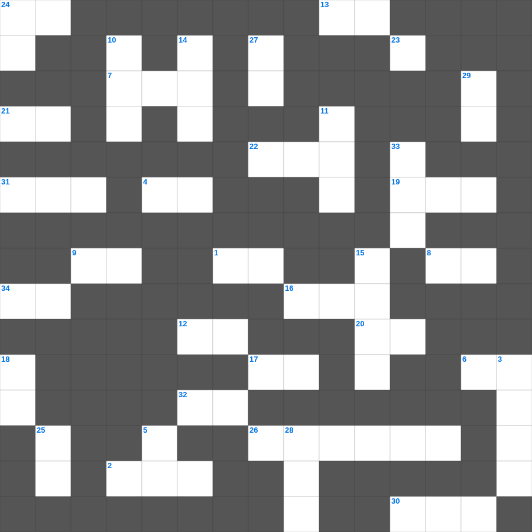

출애굽기: 모세의 소명
📌 서비스 정의
십자가로세로는 교회 주보와 주일학교에서 사용할 수 있는 성경 기반 가로세로 퍼즐 서비스입니다. 성경 인물, 사건, 핵심 구절을 바탕으로 제작되었습니다. 온라인 풀이 및 인쇄 기능을 제공합니다.
출애굽기의 말씀을 퀴즈로 배우는 출애굽기 성경 퍼즐입니다. 가로 힌트와 세로 힌트를 보고 35개의 단어를 맞춰보세요. 인쇄도 가능하고 정답 확인도 바로 되니 소그룹 모임이나 가정 예배 시간에도 활용하실 수 있습니다.

📝 가로 힌트
1. 시편 다음 책
2. 가나 혼인잔치에서 물이 이것이 된 기적
4. 복음을 전하러 외국으로 나가는 일
6. 네 이것을 공경하라
7. 바울이 2년 동안 가르쳤던 서원
8. 예배의 시작을 알리는 종소리나 기도
9. 밤이 없겠고 등불과 이것이 쓸데없으니
12. 제사장이 입는 거룩한 옷
13. 여호와 이것: 평강의 하나님
16. 예수님이 십자가를 지고 오르신 언덕
17. 단련하신 후에는 내가 이것 같이 나오리라
19. 예수님이 매달리신 형틀
20. 아합 왕이 뺏으려 했던 포도원 주인
21. 성령의 9가지 열매 중 세 번째
22. 보라 세상 죄를 지고 가는 하나님의 이것
24. 믿음 소망 사랑 중 제일은 이것
26. 제사장의 관에 붙인 금패 글귀
30. 솔로몬이 성전 건축을 위해 백향목을 가져온 곳
31. 종려나무 성읍이라 불리는 가장 오래된 성
32. 언약궤를 덮고 있는 두 천사 형상
📝 세로 힌트
3. 창세기부터 신명기까지의 5권
5. 보냄을 받은 자라는 뜻
10. 예수님의 제자 수
11. 예수님의 머리카락이 이것 같다고 묘사됨(계시록)
14. 일곱 가지가 달린 성막의 등잔대
15. 빌립이 전도한 제자
18. 새 예루살렘 성곽의 첫 번째 기초석
23. 모든 사람이 지은 근본적인 문제
24. 하나님의 형상대로 지음 받은 존재
25. 새 예루살렘 성의 길 재질
27. 새 예루살렘 성의 열두 문 재질
28. 구원의 투구와 의의 이것
29. 성막 입구의 방향
33. 이스라엘이 광야에서 보낸 년수
🧑🏫 교회 교육 자료 활용
이 퍼즐은 주일학교 교재 추천 자료로 활용할 수 있고, 주일학교 주보에 넣기 좋은 분량으로 구성되어 있습니다. 수업용 주일학교 교안에 활동지로 붙이거나, 예배 후 복습용 주일학교 공과교재로 바로 사용할 수 있습니다.
🏷️ 키워드
출애굽기 성경 퍼즐, 출애굽기, 십자가로세로, 성경퀴즈, 말씀퀴즈, 가로세로퍼즐, 주일학교 교재 추천, 주일학교 주보, 주일학교 교안, 주일학교 공과교재